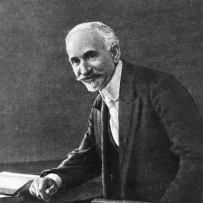

Հովհաննես Թումանյանը ծնվել է 1869 թվականի փետրվարի 19-ին Լոռվա Դսեղ գյուղում։ 1877-1879 թվականներին Թումանյանը սովորել է Դսեղի ծխական դպրոցում։ 1879-1883 թվականներին սովորել է Ջալալօղլու նորաբաց երկսեռ դպրոցում։ 1883 թվականից բնակվել է Թիֆլիսում։ 1883-1887 թվականներին սովորել է Թիֆլիսի Ներսիսյան դպրոցում, սակայն նյութական ծանր դրության պատճառով 1887 թվականին կիսատ թողնելով ուսումը` աշխատել է Թիֆլիսի հայ եկեղեցական դատարանում, այնուհետև Հայ Հրատարակչական միության գրասենյակում։ 1893 թվականից աշխատակցել է «Աղբյուր», «Մուրճ», «Հասկեր», «Հորիզոն» գրական պարբերականներին։
1899 թվականին նրա նախաձեռնությամբ Թիֆլիսում ստեղծվել է «Վերնատուն» գրական խմբակը, որի անդամներն էին Հովհաննես Թումանյանը, Դերենիկ Դեմիրճյանը, Լևոն Շանթը, Ղազարոս Աղայանը, Ավետիք Իսահակյանը, Նիկոլ Աղբալյանը և ուրիշներ։ Որոշ ընդմիջումներով խմբակը գործել է մինչև 1908 թվականը։
1912 թվականին Թումանյանն ընտրվել է նորաստեղծ Հայ գրողների կովկասյան ընկերության նախագահ, իսկ 1918 թվականին՝ Հայոց հայրենակցական միությունների միության նախագահ։ Առաջին համաշխարհային պատերազմում հայ ժողովրդի կրած վնասները հաշվելու և Փարիզի հաշտության խորհրդաժողովին ներկայացնելու նպատակով ՀՀՄՄ-ն 1918 թվականին ստեղծել է Քննիչ հանձնաժողով՝ Թումանյանի գլխավորությամբ։ 1912-1921 թվականներին եղել է Հայ գրողների կովկասյան միության նախագահ։ Հայաստանի խորհրդայնացումից հետո նախագահել է Հայաստանի օգնության կոմիտեն։
1921 թվականի աշնանը Թումանյանը մեկնել է Կոստանդնուպոլիս՝ հայ գաղթականների համար օգնություն գտնելու նպատակով։ Մի քանի ամիս մնալով այնտեղ` նա վերադառնում է հիվանդացած։ Մահացել է 1923 թվականին՝ Մոսկվայում։ Թումանյանի ստեղծագործությունների հիման վրա նկարահանվել են մի շարք ֆիլմեր, ինչպես նաև ստեղծվել են Անուշ և Ալմաստ օպերաները՝ հիմնված Թումանյանի ստեղծագործությունների վրա։
1887 թվականի սեպտեմբերին Թումանյանը սիրահարվում է Թիֆլիսի Քամոյան եկեղեցու քահանա և կոնսիստորիայի անդամ Հովհաննես քահանա Մարտիրոսյանի որդեգրուհի Մարիամ Մաճկալյանին, որին նա, ամենայն հավանականությամբ, տեսել էր Տեր-Հովհաննեսի բնակարանում կամ Խարխուփի թաղում, ուր գտնվում էր Մարիամ Մաճկալյանի տատի տունը։ Քահանա Տեր-Հովհաննեսի տանը պաշտոնական այցելություններից մեկի ժամանակ Թումանյանը ծանոթանում է ապագա կնոջ հետ։
Օլգա Մաճկալյանի հետ ամուսնանալու մտադրությունը հավանություն է գտնում աղջկա խորթ հոր՝ Տեր-Հովհաննես մոտ մեկ պայմանով, որ Թումանյանը քահանա դառնար, ինչին էլ Թումանյանը համաձայնում է։
Հովհաննես Թումանյանի և Օլգա Մաճկալյանի նշանադրության արարողությունը տեղի է ունեցել 1888 թվականի մարտի 24-ին, իսկ ամուսնությունը՝ նույն թվականի դեկտեմբերի 1-ին։
